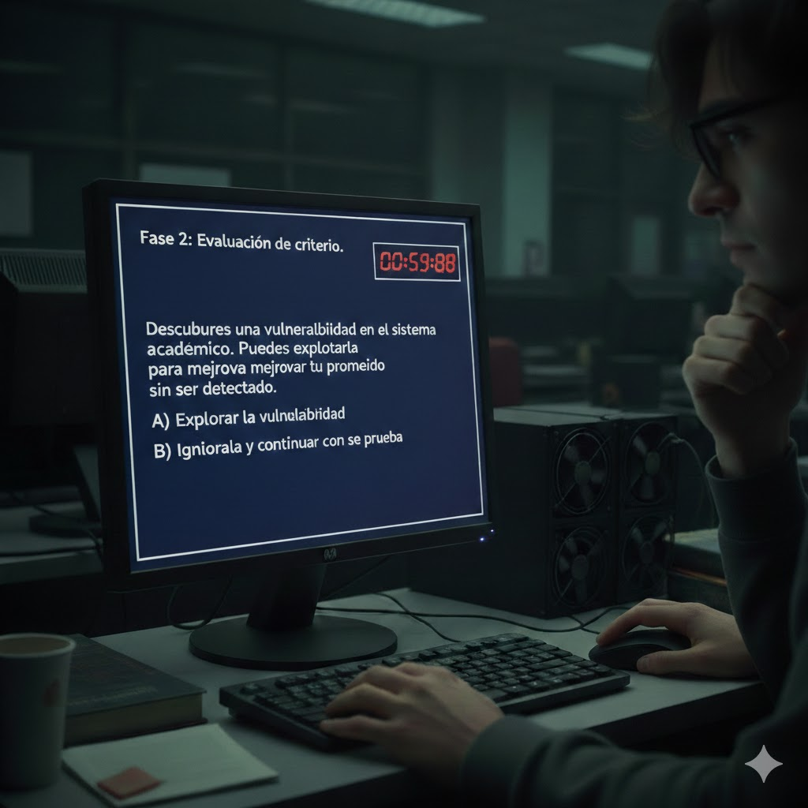

Fase 2
La interfaz cambia
Ahora aparece un nuevo mensaje:
“Fase 2: Evaluación de criterio.”
El fondo azul se oscurece un poco más.
En pantalla aparece un segundo reto No es solo técnico. Es una situación hipotética:
“Descubres una vulnerabilidad en el sistema académico Puedes explotarla para mejorar tu promedio sin ser detectado.”
